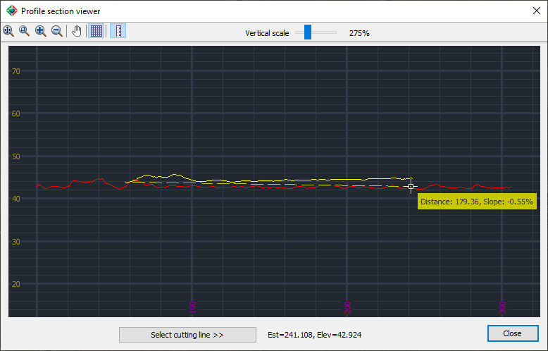

|
|
Toolbar:
Menu: CAD-Earth > Mesh > Mesh Explorer. Mesh Explorer node:
Context Menu: Profile viewer |
|
|
Command line: CE_MESHEXPLORER
CAD-Earth version: Premium. |
(1).png)
.png)
.png)
(1).png)
Command description:
Display profile sections from selected terrain meshes defining a cutting line specifying two points on the screen. You can adjust the vertical scale for the profiles, measure distance and slope, select two-point in the Profile Viewer, and zoom to extents or window, increase or decrease the view size, pan view, and show or hide the reference grid.
Dialog box settings:

ØToolbar buttons.
|
Button |
Description |
|
Zoom to extents. All the profile sections will be visible on the screen. |
|
|
Zoom to window. Select two corner points and adjust the view size to the rectangle. |
|
|
Increase zoom. View size will be incremented by 10% |
|
|
Decrease zoom. View size will be decreased by 10%. |
|
|
Pan view. If you select a point on screen and keep the left mouse button pressed and move the mouse pointer, the view will slide in the second point direction. |
|
|
Show/hide grid. Grid lines, elevation, and distance numbers can be hidden or shown. |
|
|
Distance measure mode. If you select a point on the screen and move the mouse pointer, a temporary line will be drawn, and the distance and slope from the point will be dynamically displayed. |
|
|
Vertical scale. The distances and slopes will be the same, just the display of vertical elevations will be affected by this factor. |
ØSelect cutting line. The Profile Viewer will be hidden to select two points on the drawing to define a new cutting line.
Tips:
•Color 1 (red) will be assigned to the profile of the first mesh selected, then color 2 (yellow) to the profile of the second mesh, then color 3 (green).. and so on.
•The station distance and elevation at the current cursor location will be displayed at the bottom of the Profile Viewer.
Copyright © 2023 Arqcom Software
Google Earth© is a registered trademark of Google inc. All other trademarks are the property of their respective owners.